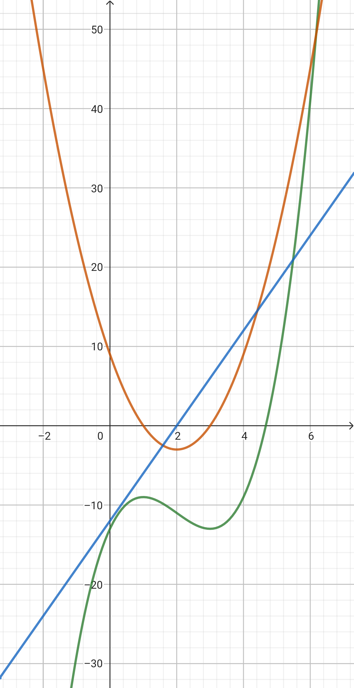

Motion Along a Straight Line: Instantaneous Velocity and Acceleration
Instantaneous Velocity
The instantaneous velocity of an object is the velocity of the object at a specific instant of time. In other words, it is the average velocity over an infinitesimally small time interval. So the instantaneous velocity can be written as the derivative of the position function with respect to time.
v = \lim_{\Delta t \to 0} \frac{\Delta x}{\Delta t} = \frac{dx}{dt}
(1)
From (1), we can also notice that the instantaneous velocity is the slope of the position-time graph at a specific instant of time.
Position-Time (x-t) Graph and Velocity-Time (v-t) Graph
Sample Problem #1
A car is moving along a straight line. The position of the car is given by the function x(t) = 2t^2 + 3t + 1 (the length unit is m and the time unit is s).
(a) Find the average velocity of the car over the time interval 1 \leq t \leq 3.
(b) Find the velocity of the car at time t = 2.
Acceleration
In physics, acceleration describes the rate at which an object's velocity changes over time (or in other words, how quickly the object speeds up or slows down). For example, if a car speeds up, we will say that the car has an acceleration to make it move faster, and if a car slows down, we will say that the car has an acceleration to make it buffer.
Average Acceleration and Instantaneous Acceleration
In the same way as velocity, we can define the average acceleration and instantaneous acceleration. The average acceleration is the change in velocity over a period time interval, and the instantaneous acceleration is the acceleration at a specific instant of time.
The average acceleration a_{avg} can be defined as the change in velocity \Delta v over the change in time \Delta t.
a_{avg} = \frac{v_1 - v_0}{t_1 - t_0} = \frac{\Delta v}{\Delta t}
(2)
From (2), we can easily find that the instantaneous acceleration is the derivative of the velocity function with respect to time.
a = \lim_{\Delta t \to 0} \frac{\Delta v}{\Delta t} = \frac{dv}{dt}
(3)
Relation between Position and Acceleration
From (1) and (3), we can find the relation between position and acceleration. The acceleration is the derivative of the velocity function, and the velocity is the derivative of the position function. We can easily find the acceleration is the second-order derivative of the position function.
a = \frac{dv}{dt} = \frac{d}{dt} \left( \frac{dx}{dt} \right) = \frac{d^2x}{dt^2}
(4)
x-t Graph, v-t Graph, and a-t Graph
Dimension and Units of Acceleration and Velocity
In physics, the dimension of a physical quantity is the expression of the physical quantity in terms of the base quantities. Usually, it can be used to check if the physical quantity is correct.
The dimension of velocity is [v] = \rm{LT^{-1}}, where \rm{L} is the length and \rm{T} is the time. In SI units, the unit of velocity is \rm{m/s}. The dimension of acceleration is [a] = \frac{[v]}{[t]} = \rm{LT^{-2}}. In SI units, the unit of acceleration is \rm{m/s^2}.
If you want to check if your answer is correct, you can check the dimension of the answer. For example, if you find the acceleration is \frac{v_1v_2}{t_1}, the dimension of this expression is \rm{L^2T^{-3}}, which is not the dimension of acceleration, so your answer is wrong.
Sample Problem #2
A particle moves along a straight line. The position of the particle is given by the function x(t) = (t-2)^3 - 3t - 5 . Answer the following questions:
(a) Write down the velocity function v(t) and the acceleration function a(t).
(b) Draw the position-time graph, velocity-time graph, and acceleration-time graph.
(c) When is the particle at rest?
(d) Find the average velocity of the particle over the time interval 1 \leq t \leq 3.
(e) When does the particle have zero acceleration?
Solutions
Sample Problem #1
(a)
The average velocity over a time interval can be calculated by the formula v_{avg} = \frac{\Delta x}{\Delta t}.
x_{t=1} = 6 , x_{t=3} = 28 \Rightarrow v_{avg} = \frac{\Delta x}{\Delta t} = \frac{28-6}{3-1} = 11 \, \rm{(m/s)}
(b)
We can find v(t) by the formula v(t) = \frac{dx}{dt}.
v(t) = \frac{dx}{dt} = \frac{d}{dt} \left( 2t^2 + 3t + 1 \right) = 4t + 3
\Rightarrow
v(2) = 4(2) + 3 = 11 \, \rm{(m/s)}
Sample Problem #2
(a) The velocity function v(t) can be calculated by the formula v(t) = \frac{dx}{dt}.
v(t) = \frac{dx}{dt} = \frac{d}{dt} \left( \left( t- 2 \right)^3 -3t -5 \right) = 3(t-2)^2 - 3
The acceleration function a(t) can be calculated by the formula a(t) = \frac{dv}{dt}.
a(t) = \frac{dv}{dt} = \frac{d}{dt} \left( 3\left( t-2\right) ^2 - 3 \right) = 6(t-2)
(b) The position-time graph, velocity-time graph, and acceleration-time graph are shown on the right.
(c) The particle is at rest when the velocity of the particle is zero.
3(t-2)^2 - 3 = 0 \Rightarrow t = 3

(d) The average acceleration over a time interval can be shown by the formula
a_{avg} = \frac{\Delta v}{\Delta t}.
v_1 = 0, v_3 = 0 \Rightarrow a_{avg} = \frac{\Delta v}{\Delta t} = \frac{0-0}{3-1} = 0
(e) The particle has zero acceleration when the acceleration of the particle is zero. So we can find the time when the acceleration is zero by the equation
a(t) = 0.
6(t-2) = 0 \Rightarrow t = 2
Excercise #1 [halliday 2.16]
(a) t = 0 ;
(b) x(0) = 4.0 \rm{\ m} ;
(c) (d) \mp \ 0.82 \ \rm{s};
(e) graph the figure ;
(f) add + 20 t ;
(g) Increase
Excercise #2 [halliday 2.17]
(a) 28.5 cm/s; (b) 18.0 cm/s; (c) 40.5 cm/s; (d) 28.1 cm/s; (e) 30.3 cm/s
Excercise #3 [halliday 2.19]
-20 \rm{m/s^2}
Excercise #4 [halliday 2.21]
(a)\ 1.10 \rm{m/s}; (b) \ 6.11 \rm{mm/s^2}; (c)\ 1.47 \rm{m/s}; (d)\ 6.11 \rm{mm/s^2}